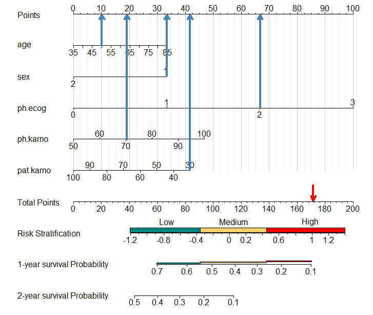
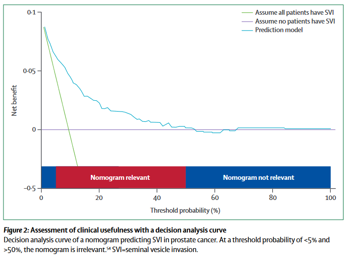
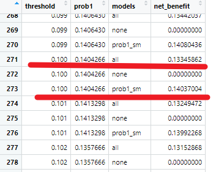
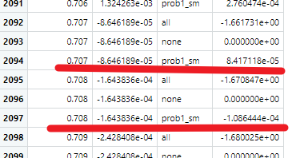

前段时间给大家介绍了如何给列线图增加彩色的危险分层条带，详情请见：列线图增加彩色风险分层

并且还介绍了如何根据列线图计算每个患者的得分，并根据得分进行最佳危险分层，请见：根据列线图计算分数并进行危险分层
今天介绍如何为决策曲线添加彩色条带，实现类似于下图的效果：

这张列线图来自于这篇文章：Nomograms in oncology: more than meets the eye，DOI：10.1016/S1470-2045(14)71116-7
这张图在底部增加了两种颜色的条带，分别是Nomogram relevant和Nomogram not relevant。
通常在解读列线图时，我们需要汇报到底在哪个阈值区间内，我们的模型是更有临床意义的，在这个区间内也就是上图中的Nomogram relevant，不在这个区间内就是Nomogram not relevant。
理解这点之后，画图就很简单了。
首先我们看看常规的决策曲线画法。先看看默认的出图：
rm(list = ls())
library(survival)
library(dcurves)
data("df_surv")
# 加载函数
source("E:/R/r-clinical-model/000files/stdca.R")
# 构建一个多元cox回归
df_surv$cancer <- as.numeric(df_surv$cancer) # stdca函数需要结果变量是0,1
df_surv <- as.data.frame(df_surv) # stdca函数只接受data.frame
cox_model <- coxph(Surv(ttcancer, cancer) ~ famhistory + marker, data = df_surv)
# 计算1.5年的概率
df_surv$prob1 <- c(1-(summary(survfit(cox_model, newdata=df_surv), times=1.5)$surv))
# 这个函数我修改过，如果你遇到报错，可以通过添加参数 xstop=0.5 解决
cox_dca <- stdca(data=df_surv,
outcome="cancer",
ttoutcome="ttcancer",
timepoint=1.5,
predictors="prob1",
smooth=TRUE,
xby = 0.001,
ymin = -0.1
)
这个默认的出图不是很好看，我们可以自己提取数据，然后使用ggplot2画：
library(tidyr)
cox_dca_df <- cox_dca$net.benefit %>%
pivot_longer(cols = c(all,none,prob1_sm),names_to = "models",
values_to = "net_benefit"
)
使用ggplot2画图：
library(ggplot2)
library(ggsci)
p1 <- ggplot(cox_dca_df)+
geom_line(aes(x=threshold,y=net_benefit,color=models),linewidth=1.2)+
scale_color_jama(name="Models Types",
labels=c("All","None","Model1"))+
scale_x_continuous(labels = scales::label_percent(accuracy = 1),
name="Threshold Probility")+
scale_y_continuous(limits = c(-0.1,0.2),name="Net Benefit")+
theme_bw(base_size = 14)+
theme(legend.background = element_blank(),
legend.position = c(0.85,0.75)
)
p1
## Warning: Removed 731 rows containing missing values (`geom_line()`).
添加彩色条带的思路也很简单，就是在合适的位置添加矩形色块即可。
首先我们查看下这个合适的阈值区间是多少。左侧的阈值应该就是在相同的横坐标下，Model1的net-benefit开始大于All的位置，右侧阈值应该是Model1的net-benefit开始小于0的位置。
我们直接查看下数据即可，最简单的方法，肉眼看一下。前面在使用ggplot2画图时已经把数据都提取好了，就是cox_dca_df这个数据。
左侧的阈值大概在0.1左右，右侧的阈值大概在0.7左右。因为没有恰好相等的情况，所以只能取个大概的阈值。
左侧阈值：

右侧阈值，0.707的净获益还是正数，0.708的净获益就是负数了，所以这个阈值应该是在0.707~0.708之间，我们就取个大约的数字，0.7。

有了这两个阈值就是有了矩形的坐标，所以下面再准备3个矩形的坐标即可，如果是ggplot2画的图，就用geom_rect()添加矩形。
# 准备3个矩形的坐标
rect_df1 <- data.frame(xmin = 0,
xmax = 0.1,
ymin = -0.05,
ymax = -0.1
)
rect_df2 <- data.frame(xmin = 0.1,
xmax = 0.7,
ymin = -0.05,
ymax = -0.1
)
rect_df3 <- data.frame(xmin = 0.7,
xmax = 1,
ymin = -0.05,
ymax = -0.1
)
解释说明的文字直接使用annotate()函数添加即可：
p2 <- p1+
geom_rect(data = rect_df1,
mapping = aes(xmin = xmin, xmax=xmax,ymin=ymin,ymax=ymax),
fill = "#0151a2")+
geom_rect(data = rect_df2,
mapping = aes(xmin = xmin, xmax=xmax,ymin=ymin,ymax=ymax),
fill = "#c01e35")+
geom_rect(data = rect_df3,
mapping = aes(xmin = xmin, xmax=xmax,ymin=ymin,ymax=ymax),
fill = "#0151a2")+
annotate(geom = "text", label = "Nomogram relevant",
x = 0.4, y = -0.075,
size = 4.5, color = "white")+
annotate(geom = "text", label = "Nomogram irrelevant",
x = 0.85, y = -0.075,
size = 4.5, color = "white")
p2
## Warning: Removed 731 rows containing missing values (`geom_line()`).
是不是很easy呢？
还可以再添加2条竖线，使图形更容易理解：
# 准备2条竖线坐标
line_df <- data.frame(x = c(0.1,0.7),
ymin = c(-0.05,-0.05),
ymax = c(0.13,0)
)
添加竖线：
p2+geom_linerange(data = line_df, mapping = aes(x=x,ymin=ymin,ymax=ymax),
linetype = 2, linewidth = 1.2
)
## Warning: Removed 731 rows containing missing values (`geom_line()`).
如果是默认的出图，那就更简单了，因为都是R语言默认的画图引擎，支持所有base r画图语法，和之前列线图添加彩色条带的方法一模一样：
cox_dca <- stdca(data=df_surv,
outcome="cancer",
ttoutcome="ttcancer",
timepoint=1.5,
predictors="prob1",
smooth=TRUE,
xby = 0.001,
ymin = -0.1
)
# 添加条带
rect(xleft = 0,xright = 0.1,ybottom = -0.05,ytop = -0.1,col = "#0151a2",border = NA)
rect(xleft = 0.1,xright = 0.7,ybottom = -0.05,ytop = -0.1,col = "#c01e35",border = NA)
rect(xleft = 0.7,xright = 1,ybottom = -0.05,ytop = -0.1,col = "#0151a2",border = NA)
# 添加文字
text(x = 0.4, y = -0.075, labels="Nomogram relevant",col="white")
text(x = 0.85, y = -0.075, labels="Nomogram relevant",col="white")
搞定！